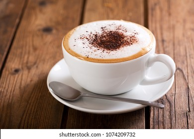
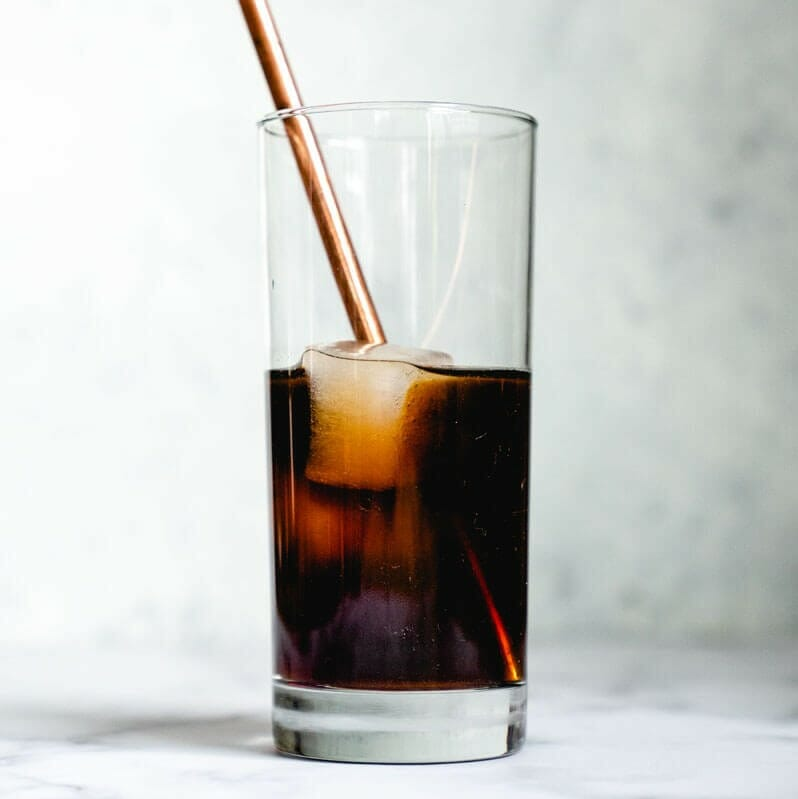
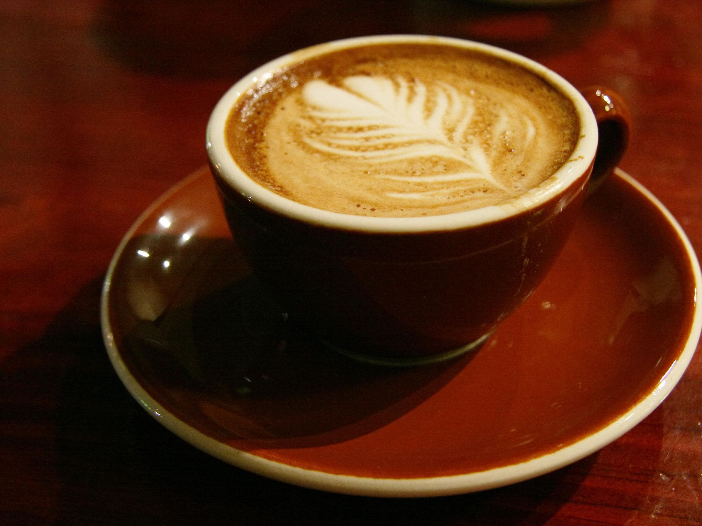

AFFOGATOEspresso poured on a vanilla ice cream. Served in a cappuccino cup. ₱ 80.00 |

AMERICANOEspresso with added hot water (100–150 ml). Often served in a cappuccino cup. (The espresso is added into the hot water rather than all the water being flowed through the coffee that would lead to over extraction.) ₱ 120.00 |

CAFFÈ LATTEA tall, mild 'milk coffee' (about 150-300 ml). An espresso with steamed milk
and only a little milk foam poured over it. Serve in a latte glass or a coffee cup.
Flavoured syrup can be added. ₱ 150.00 |

CAPPUCCINOA coffee drink consisting of espresso and a milk foam mixture (drink size about 160–240 ml). Served in a cappuccino cup. ₱ 90.00 |

CAFFÈ MOCHAA caffè latte with chocolate and whipped cream, made by pouring about 2 cl of chocolate sauce into the glass,
followed by an espresso shot and steamed milk. ₱ 130.00 |

CAFÈ AU LAITFrench morning coffee. Made by mixing dark roasted filter coffee (often prepared with French Press)
and warm milk. Served in a bowl or a large coffee cup. ₱ 140.00 |

COLD BREW COFFEECold Brew Coffee is a smooth, cold beverage prepared by brewing freshly ground coffee in cold water.
In the Cold Brew process, time makes up for heat. ₱ 180.00 |

DOUBLE ESPRESSO (DOPPIO)Double portion of espresso in a cappuccino/espresso cup. ₱ 110.00 |

ESPRESSO MACCHIATOEspresso with a little milk foam (drink size about 50 ml). Served in an espresso cup. ₱ 160.00 |